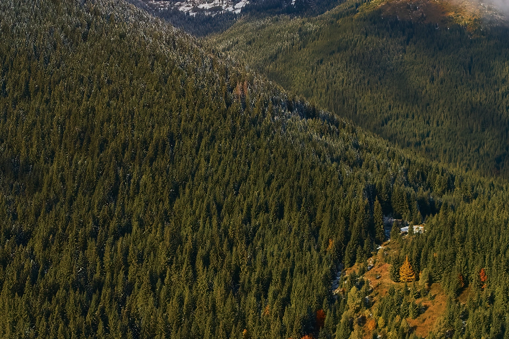
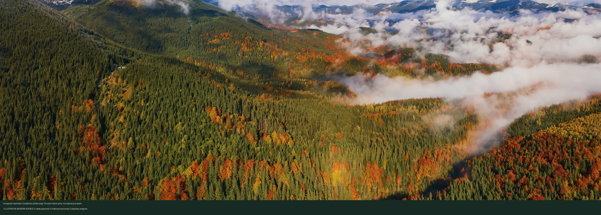
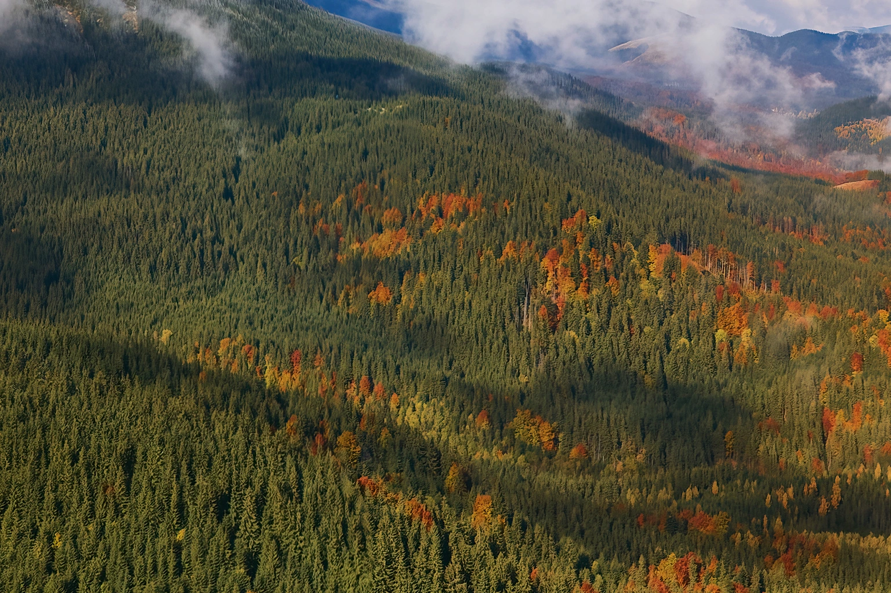
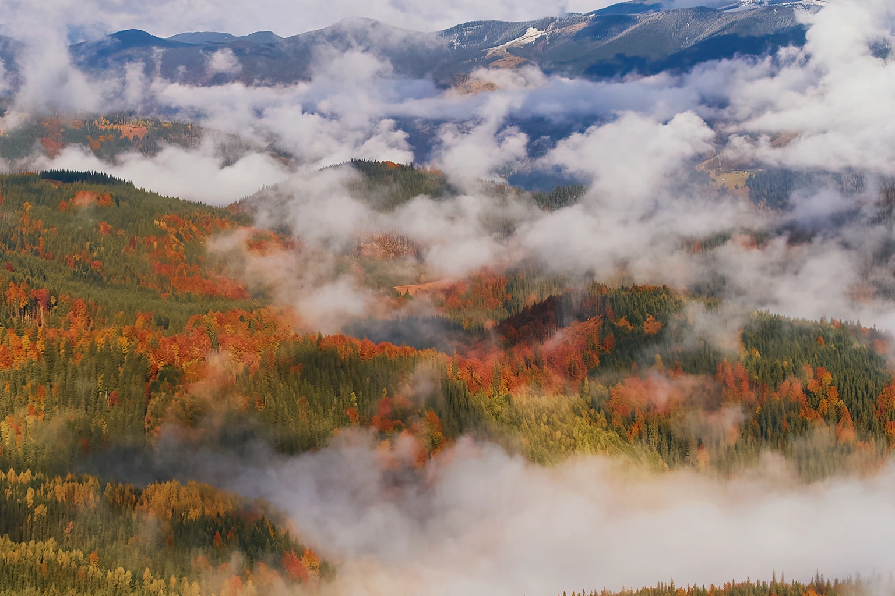
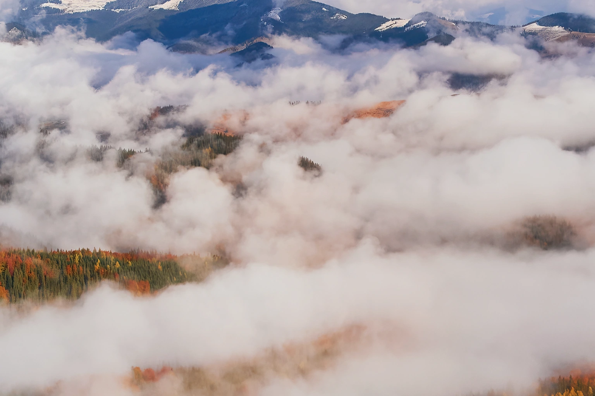
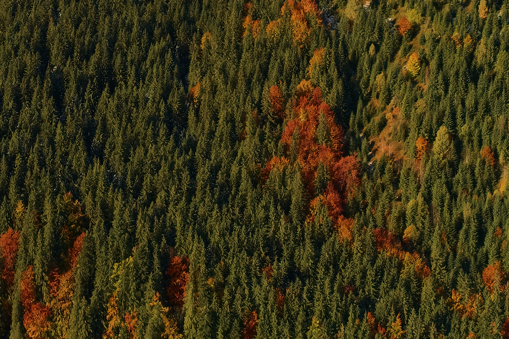
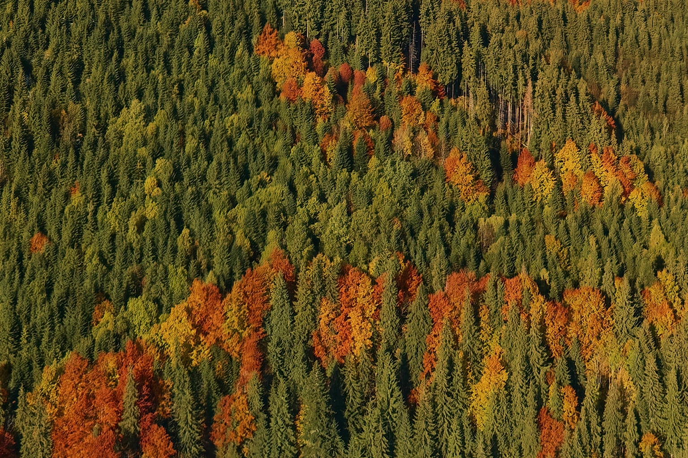
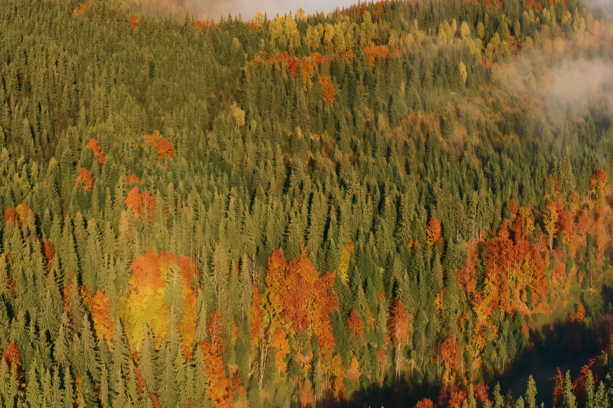
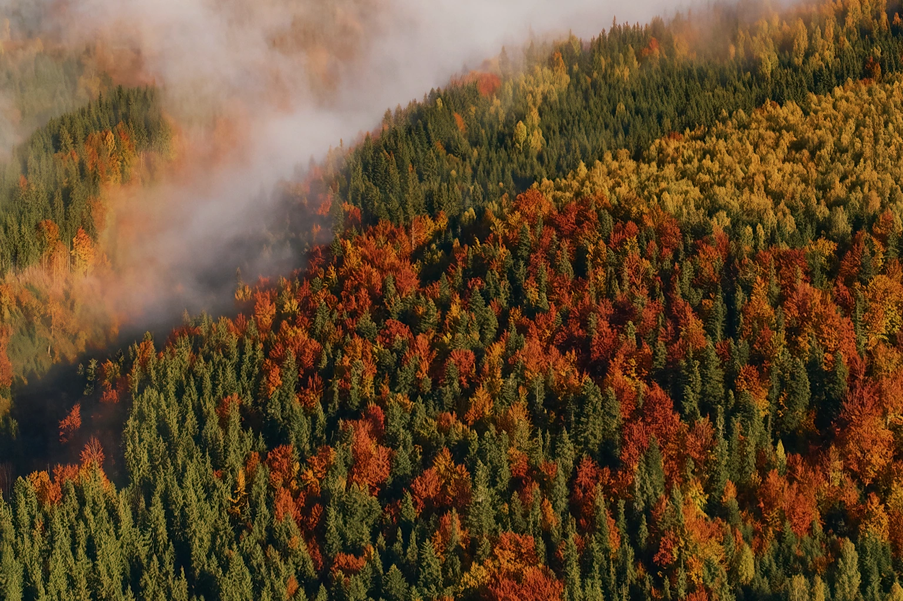

eu-10-12 · licensed photo source, NO approved roads
Original photo pixels, no mirrored trees or global warping. No cross-source boundaries; no roads or provinces are inferred from seamless terrain.


eu-10-12 · licensed photo source, NO approved roads

eu-11-12 · licensed photo source, NO approved roads

eu-12-12 · licensed photo source, NO approved roads

eu-13-12 · licensed photo source, NO approved roads

eu-10-13 · licensed photo source, NO approved roads

eu-11-13 · licensed photo source, NO approved roads

eu-12-13 · licensed photo source, NO approved roads

eu-13-13 · licensed photo source, NO approved roads
Photos © Ryzhkov Oleksandr, CC BY-SA 4.0. Adapted color/exposure; attribution and share-alike apply to derivative imagery. NOT 1780 georegistration.